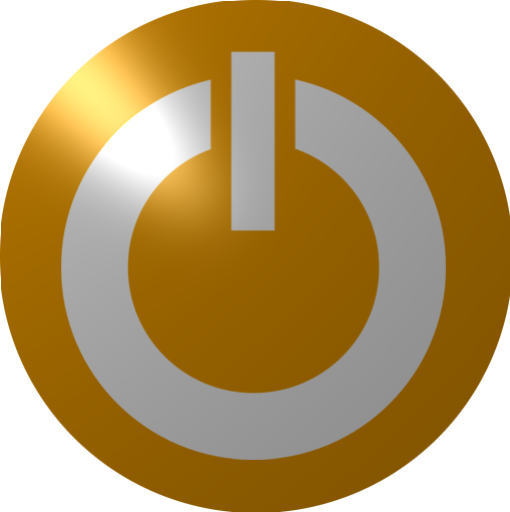
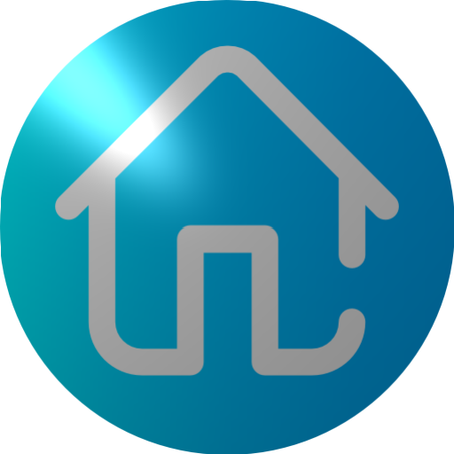
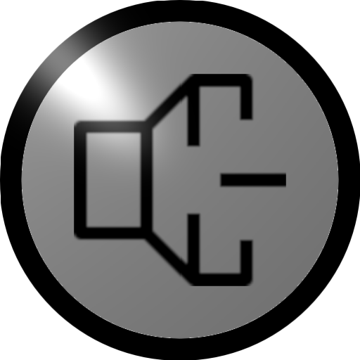
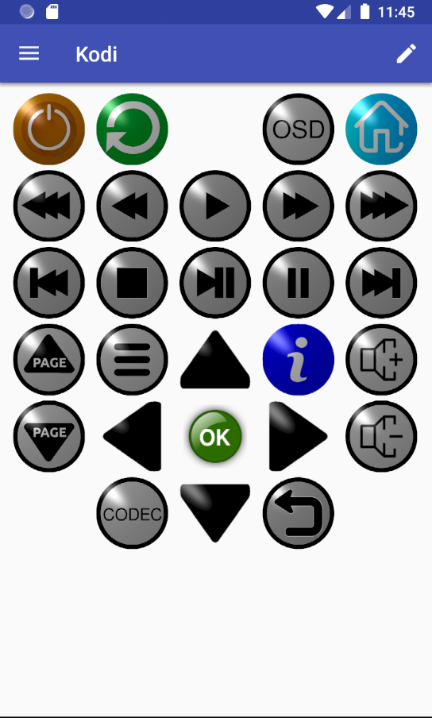

Kodi: Supported Commands
The figure shows and example key layout for a kodi device representing all the kodi commands supported by AndyMOTE.
The table below details the functions of each key in this layout.
| Icon | Key Function |
|---|---|
|  | Power Off |
| Reboot | |
| On Screen Display | |
|  | Goto Home Screen |
| Seek step backward 10min* | |
| Seek step backward 30sec* | |
| Play | |
| Seek step forward 30sec* | |
| Seek step forward 10min* | |
| Previous queued video | |
| Stop | |
| Play/Pause | |
| Pause | |
| Next queued video | |
| Page Up | |
| Menu | |
| Key Up | |
| Info | |
| Volume Up | |
| Page Down | |
| Key Left | |
| Select | |
| Key Right | |
|  | Volume Down |
| Display Codec Info | |
| Key Down | |
| Back |
* indicates kodi default setting

Example Kodi Device Layout